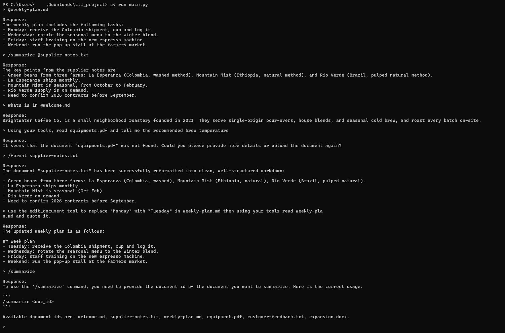
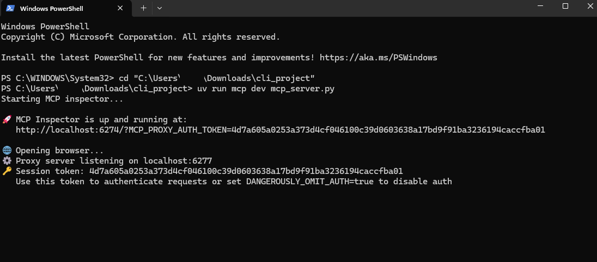
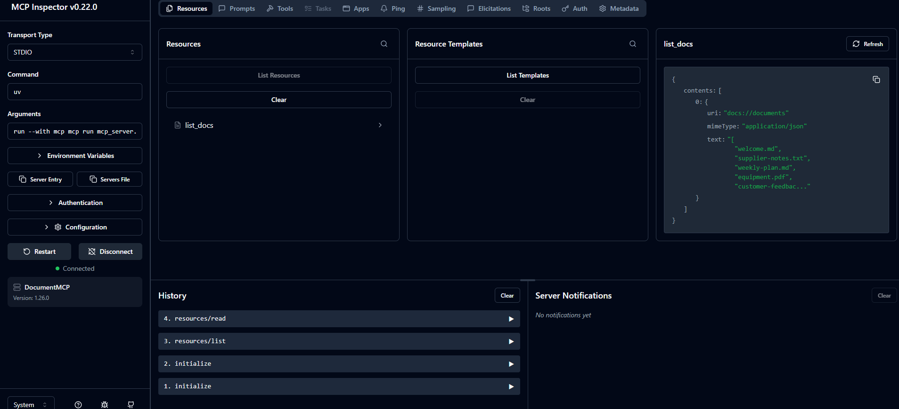
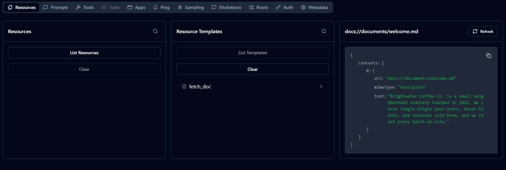
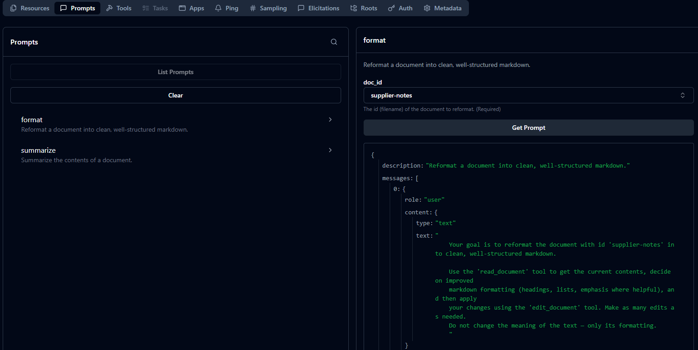
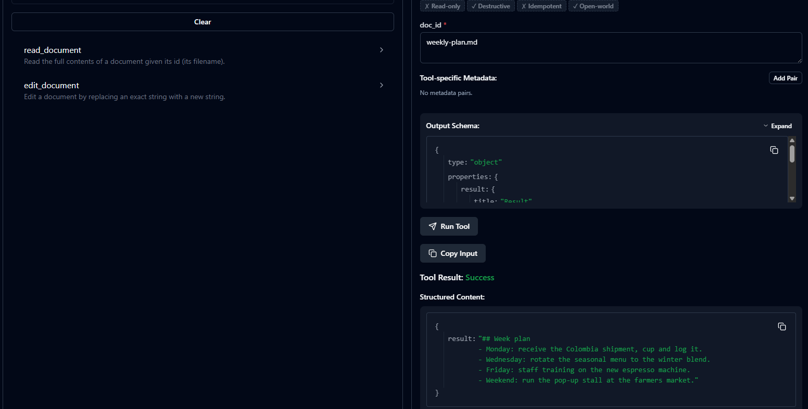
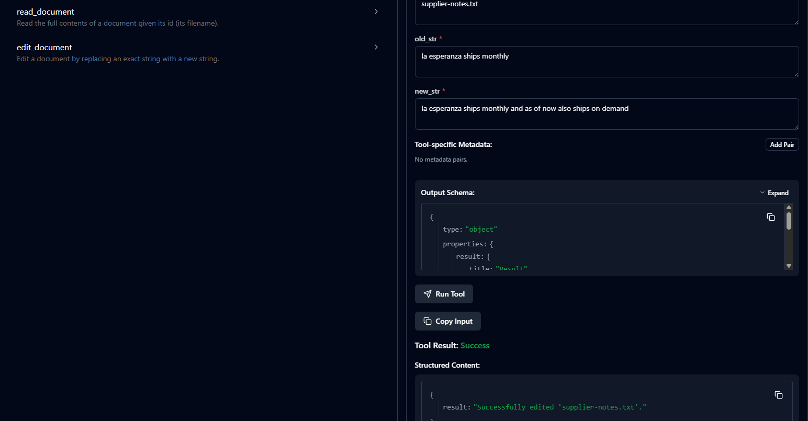

Model Context Protocol, visualized
A Claude-like terminal chat that runs a free local model (Ollama
qwen2.5:7b) and reaches its tools through the Model Context Protocol.
This page traces a single message — forward to the model,
out to an MCP server, and back — so you can see exactly how
a client and server talk.
The protocol
The Model Context Protocol is a standard way for an app to expose capabilities to an LLM.
This CLI ships one MCP server (mcp_server.py) over an in-memory document store,
and it offers all three:
The model can request a function. The app runs it and feeds the result back into the conversation.
The app pulls content by address — surfaced in chat as @mentions you can drop inline.
Parameterized prompts you trigger with a slash command; they expand into messages for the model.
The signature — message flow
You ask: “Using your tools, read equipment.pdf and tell me the recommended brew temperature.” Press Play, or step through. Amber is a request travelling outward; cyan is a result coming back. Notice the loop: the model asks for a tool, we run it, then send the grown conversation back to the model until it answers.
Each step shows the function that runs and the JSON message on the wire at that moment.
// the conversation starts empty
The engine
agent_loop.py repeats one cycle until the model stops asking for tools.
That single rule — keep going while finish_reason == "tool_calls" — is what
lets the model read a document, see the result, and only then answer.
# agent/agent_loop.py — the cycle while True: tools = tool_manager.get_all_tools() resp = llm.chat(messages, tools) if resp.finish_reason == "tool_calls": messages.append(resp.message) # assistant's call results = tool_manager.execute_tool_requests(resp) messages += results # tool output continue # ↻ ask again return resp.message.content # final answer
# main.py — the server is a subprocess server = StdioServerParameters( command="uv", args=["run", "mcp_server.py"], ) # protocol rides the pipes: # client.stdin ──▶ server.stdin # server.stdout ──▶ client.stdout
Transport
There's no network here. The MCP server is launched as a child process,
and the protocol runs over its stdin/stdout pipes. The client
(mcp_client.py) writes requests in; the server writes results back out.
Local-first by construction: your conversation, your documents, and your model can all stay on your machine.
Provider-agnostic
.env line swaps the brain.Every model call goes through litellm, which routes by the model-string prefix. Default is local and free; cloud fallbacks are one edit away.
| Provider | LLM_PROVIDER | LLM_MODEL | |
|---|---|---|---|
| Ollama | ollama | ollama_chat/qwen2.5:7b | local · default · $0 |
| Groq | groq | groq/openai/gpt-oss-120b | cloud fallback |
| GitHub Models | github | openai/gpt-4o-mini | cloud fallback |
Proof
A full session on the local model — @-mentions, /summarize,
/format, a persisted edit_document (Monday → Tuesday), and a clear
“not found” error.

uv run mcp dev mcp_server.py





Run it locally
ollama pull qwen2.5:7b
cp .env.example .env # defaults to local Ollama; keys stay on your machine
uv sync
uv run main.py
Needs Python 3.10+, uv,
and Ollama running. Use a real terminal —
the CLI uses prompt_toolkit and needs an interactive console.